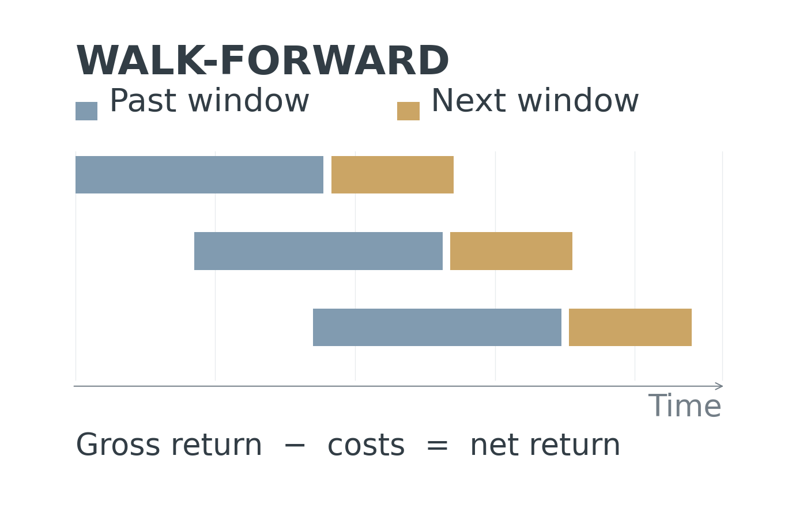

Play demo · 2:31
Play demo · 2:31Residual RL for Precise, Contact-Rich Manipulation
We developed a residual reinforcement learning framework for a UR5e robotic cellist, using a reward classifier trained on human ratings to guide bowing and improve sound quality.

I am a Computer Science undergraduate at Purdue University, minoring in Mathematics and expecting to graduate in May 2027. Since January 2026, I have been an undergraduate researcher advised by Prof. Yung-Hsiang Lu, working on real-world robot learning. I have served as a team lead since summer 2026.
My research focuses on machine learning and multimodal learning, integrating vision, force, audio, and robot configuration for precise, contact-rich manipulation.
Play demo · 2:31We developed a residual reinforcement learning framework for a UR5e robotic cellist, using a reward classifier trained on human ratings to guide bowing and improve sound quality.
We are developing multimodal robot learning methods that integrate audio, force/torque, vision, and robot state for robotic bowing, alongside action-space expansion and cross-string adaptation.

Synchronization and bounded IPC on BeagleBone Black; ongoing.
C++17, hand-written parsing, pipelines, redirection, and foreground process control.
C++17, local HTML traversal, inverted indexing, and multi-keyword AND search.
